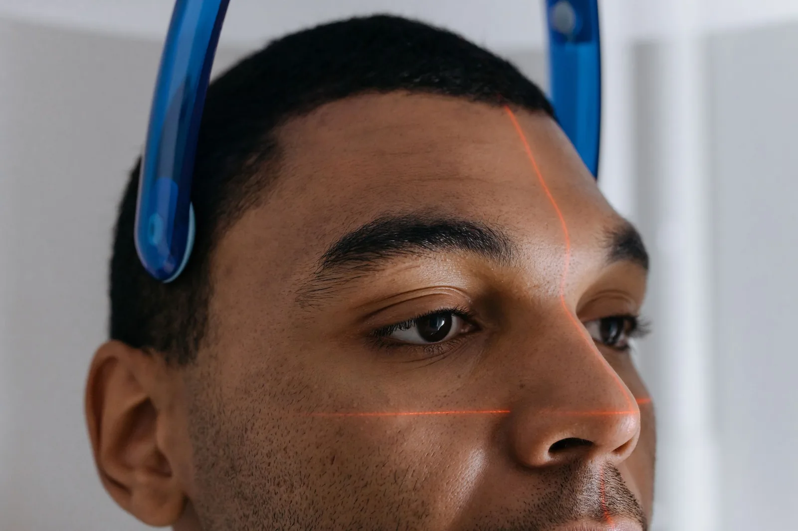
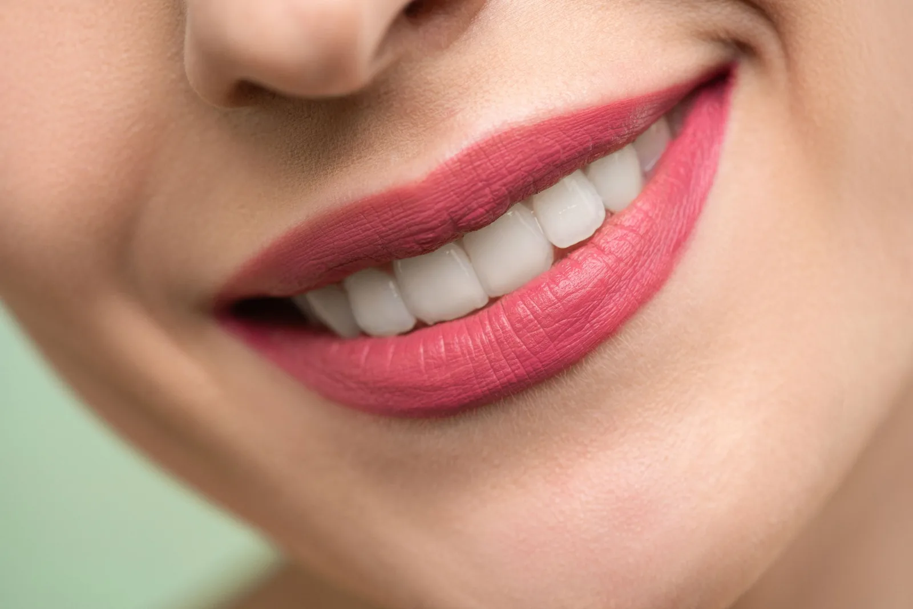
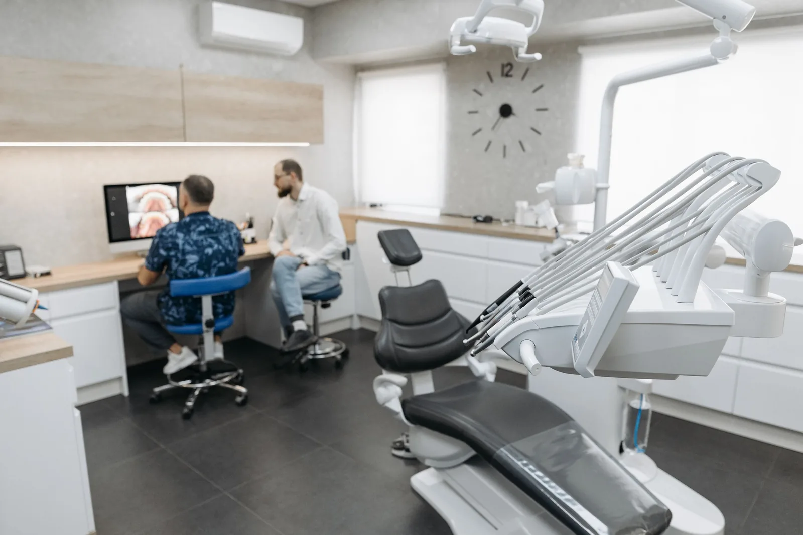
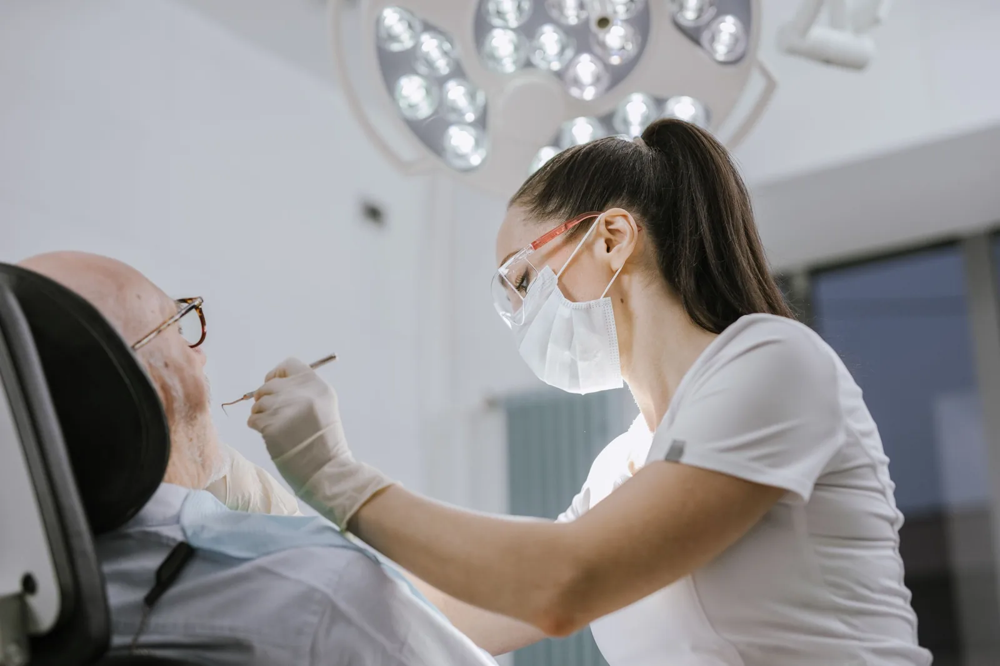
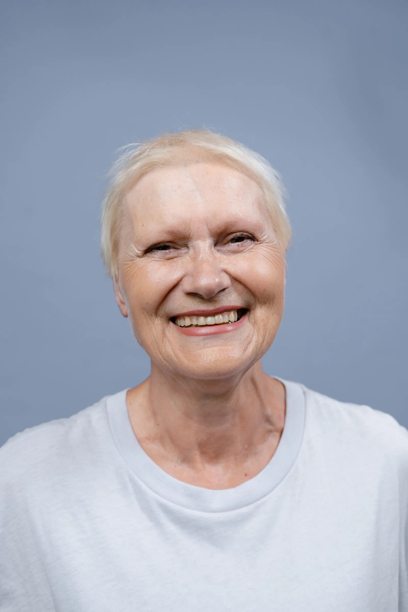
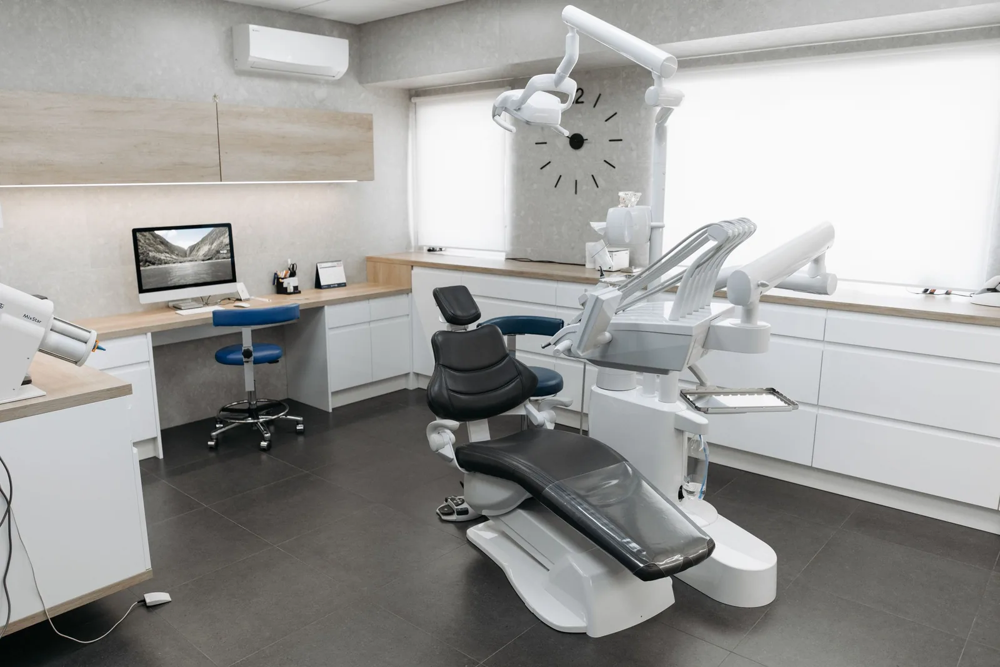

Home / Services
Dental services in Winter Garden
Everything below happens at 950 Windermere Rd. Nothing on this page is a referral to somebody else — the periodontist who places the implant and the prosthodontist who restores it work twenty feet apart.
Key facts
- Specialists on site
- A board-certified periodontist, a prosthodontist and a dentist anesthesiologist — all practising in one building at 950 Windermere Rd.
- Imaging
- Digital X-rays and 3D CBCT scanning, used to plan implant position before surgery rather than during it.
- Sedation
- Nitrous oxide, oral sedation and IV sedation, delivered and monitored by Dr. Michael Walbom, a dentist anesthesiologist.
- Financing
- CareCredit and Cherry, applied for in the chair. In-house membership plans from $550 a year with 15% off all other treatment.
- Hours
- Monday to Thursday 8am–5pm. Saturday 8am–1pm by appointment. Closed Friday and Sunday.
- Service area
- Winter Garden, Windermere, Horizon West, Ocoee, Oakland, Gotha, Clermont, Dr. Phillips and west Orlando.
Dental implants
Implants placed and restored by the same team
A dental implant is a titanium post that replaces the root of a missing tooth. Bone grows onto it over a few months, and a crown is then attached. Done well it is the only restoration that stops the jawbone shrinking where the tooth used to be.
Most practices place implants or restore them. Here Dr. Dugas — board certified in periodontics, ICOI diplomate, Pikos and Misch trained — does the surgery, and Dr. Chung, a specialist prosthodontist, designs what goes on top. Both plan the case together from the same CBCT scan before anything is placed, which is how you avoid an implant that is perfectly integrated and in the wrong place.
- Single tooth implants
- Full-arch fixed hybrids
- Bone grafting & sinus lifts
- Gum grafts
- Guided surgical placement
- Implant consultation with CBCT

Cosmetic dentistry
Try the smile on before you commit to it
Veneers are thin porcelain facings bonded to the front of the teeth to change shape, length, alignment and colour at once. The risk with them has never been the porcelain — it is agreeing to a result you have only seen on a screen.
So we do a smile trial first: a temporary mock-up placed straight over your own teeth, in the chair, that you can look at, speak with and photograph before a single tooth is prepared. Change the length, the width, the shade. Only when it is right does anything become permanent.
- Porcelain veneers
- Cosmetic bonding
- Professional whitening
- Gummy smile correction
- Smile trial
- BOTOX & facial esthetics

Dentures & restorative
A specialty most towns do not have
Prosthodontics is the recognised dental specialty for replacing and restoring teeth, and it takes three years of residency beyond dental school. Dr. Chung completed hers at the University of Pittsburgh.
That matters most at the difficult end: a full arch that has to look natural and survive a bite force, or a mouth where nothing is left to match to. A fixed hybrid denture — a full arch anchored to four to six implants and never taken out — is the treatment people most often did not know existed.
- Fixed hybrid dentures
- Partial & full dentures
- Dental crowns
- Dental bridges
- Full-mouth rehabilitation
- Denture repairs & relines

Gum & periodontal care
Gum disease is why adults lose teeth
Not decay. Periodontal disease is painless until it is advanced, which is exactly what makes it dangerous — bone is lost quietly, and bone does not grow back on its own.
Because a periodontist practises here, the treatment does not stop at a deep cleaning. Grafting to rebuild lost tissue, crown lengthening, gingivectomy and guided bone regeneration are all done in-house, and the maintenance interval afterwards is set by what your gums actually measure rather than by a default six months.
- Scaling & root planing
- Periodontal maintenance
- Gum grafts
- Crown lengthening
- Gingivectomy
- Bone regeneration

Sleep apnea & TMJ
Your dentist sees your airway every visit
Obstructive sleep apnea is a breathing disorder, but the signs show up in the mouth first — worn teeth, a scalloped tongue, a narrow arch, morning headaches and a jaw that clicks.
We screen for it as standard. Where sleep apnea is diagnosed, custom oral appliance therapy repositions the lower jaw during sleep to hold the airway open — the accepted alternative for people who cannot tolerate CPAP. Dr. Dugas is pursuing board certification in dental sleep medicine.
- Sleep apnea screening
- Custom oral appliances
- TMJ treatment
- Night guards
- Bruxism & clenching
- Airway assessment

General & preventive
The unglamorous half that decides everything
Cleanings, exams, X-rays and fillings are what keep the rest of this page hypothetical. They are also where the sedation option matters most, because the people who avoid a cleaning are the ones who end up needing an implant.
Every new patient gets a full assessment: gums charted, bite checked, airway screened and an oral cancer screening under UV light. If it has been years, that is genuinely fine. We are not going to lecture you — we are going to tell you where you are and what it takes to fix it.
- Cleanings & exams
- Digital X-rays
- Tooth fillings
- Tooth extractions
- Wisdom teeth removal
- Oral cancer screening

Questions
About treatment
How long do dental implants last?
An implant is titanium fused into bone and does not decay, so with healthy gums and regular maintenance the implant itself is a lifetime restoration. The crown on top is the part that wears, and typically lasts ten to fifteen years before it is replaced.
Do veneers ruin your natural teeth?
Modern porcelain veneers remove roughly half a millimetre of enamel — less than the thickness of a fingernail — and in some conservative cases none at all. Because a prosthodontist designs and fits them here, the preparation is driven by the final design rather than guessed at first.
Is gum disease treatment painful?
Scaling and root planing is performed under local anaesthetic and most patients report pressure rather than pain. If that is still more than you want to be present for, the same appointment can be done under nitrous or IV sedation with our dentist anesthesiologist.
What is the difference between a prosthodontist and a general dentist?
A prosthodontist completes three additional years of accredited residency devoted entirely to replacing and restoring teeth — crowns, bridges, dentures, implant restorations and full-mouth rehabilitation. It is one of twelve recognised dental specialties, and most towns this size do not have one.
Winter Garden, FL
Start with a diagnosis, not a quote
Come in, get scanned, and leave knowing exactly what you are dealing with and what it costs.